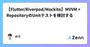
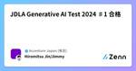

Zennの「Test」のフィード
フィード

JetBrains AquaでPlaywriteのE2Eテストを書いてみた 1
1
Zennの「Test」のフィード
はじめに 「Aqua」は、JetBrains社が開発したテスト自動化に特化したIDE（統合開発環境）です。 テストコード作成やテスト実行が効率的におこなえるよう、以下機能などが備わっています。 E2Eフレームワーク: Selenium、Playwright、Cypressをサポート。 コーディング支援: Java、Kotlin、Python、JavaScript、TypeScriptなどの言語対応。 Webインスペクタ: テスト対象のロケーターの検証や、CSSやXPathの指定を補完。 HTTPクライアント: テスト対象のAPIを呼び出すためのHTTPクライアントを内蔵。 ...
2日前

Test
Zennの「Test」のフィード
テスト てすと テストです https://www.docker.com/ja-jp/products/docker-desktop/ function test(string arg) : void { // 何らかの // 処理を // 書く }
2日前

TSのType, Interface, Classから秒でテストデータ作成するnpm-pkg公開(Rust製) 3
Zennの「Test」のフィード
はじめまして🙋 タイトルの通りTypescriptのType, Interface, Classから秒でテストデータ作成するツールを公開しました👏👏👏 boostestと言います🚀🚀🚀 https://github.com/MasatoDev/boostest https://www.npmjs.com/package/boostest boostestとは？ npmでインストールするコマンドです。 日本語のREADMEには利用方法の動画もあります✨✨ ざっくりいうと下記のようなツールでして... typescriptのtypeやinterface, classから瞬時にテ...
3日前

Go の ogen でテストを実装する３つのパターン
Zennの「Test」のフィード
はじめに ogen 関連シリーズ第３弾です。 シリーズ化するとともに ogen がどんどん好きになっています。 第１弾 https://zenn.dev/otakakot/articles/43653194611d42 第２弾 https://zenn.dev/otakakot/articles/8f15c1bc906e4e 今回は ogen でテストを実装する際に使える３つのパターンをご紹介します。 ogen https://ogen.dev/ OpenAPI からコードを自動生成することができ、以下のような特徴があります。 生成されたコードで refrect や inter...
3日前

[Laravel] Factoryインスタンスをrawメソッドでarray化する
Zennの「Test」のフィード
v11.13.0で確認 概要 src/Illuminate/Database/Eloquent/Factories/Factory.phpのrawメソッドを使うことで、Factoryインスタンスをarrayに変換できる tinker環境での実行結果 > User::factory()->raw() = [ "name" => "Eriberto VonRueden", "email" => "ewald.rohan@example.net", "email_verified_at" => Illuminate\Support\...
4日前

Vite+React+TypeScript環境にJestとReact Testing Libraryを導入する
Zennの「Test」のフィード
1．Jest, React Testing Libraryの導入 npm install --save-dev jest ts-jest @types/jest jest-environment-jsdom@latest @testing-library/react@latest @testing-library/jest-dom@latest @testing-library/user-event@latest 2．package.jsonにjestコマンドを追加 "scripts": { # 略 "test": "jest" }, 3．con...
6日前

BigQueryを利用したアプリケーションのローカルテスト 1
Zennの「Test」のフィード
BigQueryを利用するアプリケーションの開発時に、データベースの操作をどのようにテストするかが課題となります。その際の主な選択肢は下記となります。 BigQueryのモックを作成してローカルでテストする テスト用のBigQuery環境を用意してGCP上でテストする bigquery-emulatorを利用してローカルでテストする 1. BigQueryのモックを作成してローカルでテストする 概要 BigQueryの操作をモック化し、テスト時に実際のBigQueryに接続せずにテストを行う方法です。 メリット テストの実行が高速 外部サービスに依存しないため、安定し...
7日前
API テストを Scenarigo と GitHub Actions で自動化する
Zennの「Test」のフィード
はじめに Hogetic Lab でエンジニアをしている佐々木と申します。 API テストは、システムの信頼性を確保するために不可欠なプロセスです。特に、複雑なシステムや多くの依存関係を持つアプリケーションでは、手動でのテストは時間と労力がかかります。弊社では API のテストツールとして Scenarigo を導入しています。本記事では、Scenarigo を使用して API テストを行い、GitHub Actions を使って CI パイプラインに統合する方法について紹介します。 Scenarigo とは？ Scenarigo は、YAML 形式のシナリオファイルを使用して ...
7日前

WACATE24夏に参加しました
Zennの「Test」のフィード
こんにちはHR-techブロダクトでQAエンジニアを担当しているますやまゆうきです。 詳細は後述しますが、WACATEネームはまっす〜です。 ソフトウェアテストの合宿形式のワークショップ「WACATE」に初参加しましたので、詳細についてブログで書かせていただこうと思います。 対象読者 WACATEに興味はあるけど参加したことがない方 WACATE参加経験者 未来の自分(次回参加時の事前準備短縮用) イベントの詳細 WACATEとは Workshop for Accelerating CApable Testing Engineers：内に秘めた可能性を持つテストエンジニ...
8日前
ReactにVitestを追加してテスト環境を整備する方法 1
Zennの「Test」のフィード
どうもこんにちは、たくびーです。 今回はReactプロジェクトにvitestを導入したので備忘録として残したいと思います。 Vitest導入方法 パッケージインストール まずは必要なパッケージをインストールします。以下のコマンドを実行してください。 npm install -D vitest jsdom @testing-library/jest-dom @testing-library/react @testing-library/user-event ファイル追加 次に、テストのセットアップ用ファイルを追加します。vitest-setup.tsというファイルを作成し、以下...
9日前

【Flutter/Riverpod/Mockito】MVVM + RepositoryのUnitテストを検討する
Zennの「Test」のフィード
ディレクトリ構成 liblib ├─ model │ ├ user.dart │ ├ user.freezed.dart │ └ user.g.dart │ ├─ repository │ ├ api_client.dart │ └ users_repository.dart │ ├─ controller │ ├ user_list_page_controller.dart │ ├ user_list_page_controll.freezed.dart │ ├ user_list_page_st...
11日前

JDLA Generative AI Test 2024 ♯1 合格
Zennの「Test」のフィード
こんちは、Jimmyです。 Generative AI Test合格してました！！ Generative AI Testとは 一般社団法人日本ディープラーニング協会（JDLA）が実施する、生成AIに特化した知識や活用リテラシーを確認するためのミニテストです。 試験の特徴 受験資格に制限はなく、誰でも受験可能です。 試験時間は20分で、19問の択一式/多肢選択式問題と1問の記述式問題があります。 オンラインでPC/スマートフォンから受験できます。 受験費用は2,200円（税込）と比較的安価です。 合格者にはオープンバッジが付与されます。 2023年の第1回試験の合格率は73.9%...
11日前
[gomock] 新しく追加されていたCondが便利だった件 1
Zennの「Test」のフィード
gomockとは？ gomockは、Go言語用のモッキング・フレームワークです。 元々はGoogleのgolang/mockとして開発されていましたが、2023年の6月頃にプロジェクトがアーカイブされ、現在はUber社がフォークして保守しています。 基本的な使い方はこちらの記事をご参照ください。 https://zenn.dev/sanpo_shiho/articles/01da627ead98f5 本記事ではUber社によってフォークされたのちに追加された便利Matcherのうち、特に活用頻度が高いCondMatcherについて紹介していきます。 Cond以外のMatcherについ...
13日前

軽量なStorybook駆動開発を支えるコンポーネント設計
Zennの「Test」のフィード
こんにちは。この記事ではStorybook駆動開発をゼロから導入するために実践した内容をコンポーネント設計の側面から紹介します。合わせて、紹介した設計を元にどのようなテストを実装しているかについても紹介します。 簡単に実装できることが持続可能なテストへの鍵 Webフロントエンドの持続可能なテスト文化を醸成するためには、テストを開発フローの中で簡単に実装できることが何よりも重要です。テストの実装に機能開発以上のコストが掛かってしまう場合、「時間が無いのでテストコードを後から実装する（結果実装されない）」という典型的なアンチパターンに繋がってしまいます。 持続可能なテストを実現するた...
17日前
【単体テスト負債論】単体テストのテスト対象【Private メソッドはテストしない】
Zennの「Test」のフィード
単体テストは必要なのか 単体テストについては、昔からよく話題になりますし、自分の身の回りでも紛糾を見ることがあります。 まず自分は、「単体テストはコストが高くなりがち、費用対効果の高いテストを残したい」と考えています。 単体テストを書くべきなのか、単体テストとは何なのか。テスト実行時間、安定性（Flakyさ）、メンテナンス性などの切り口で語られることは多く、それらは大いに賛同するものです。 それでも多くの悩みを目にします。そこで別の側面から考えてみます。 単体テストはチームの開発の仕方とセットで考え、「開発成果物とする最小の単位でテストを書く」ということです。 前置き 単体テ...
19日前
【Flutter】riverpod genarator を使ったProviderのユニットテスト
Zennの「Test」のフィード
🔥 導入 Flutterでriverpod generatorを使ったProviderのユニットテストコードを通して、基本的なテストコードの書き方をまとめておきます。 Poke Matchという勉強用アプリの中で使用しているProviderを例にします。 しょうもないアプリですが、気になる方は見てみてください。 ポケモンとTinder風UI/UXでマッチングアプリ体験できます。 https://pokemon-matching.web.app/ ※パッケージの導入方法などは割愛します🙇♂️ 🎯 テスト対象ファイル 以下は、1~1,000までの数字をランダムな順番で持つList&...
20日前
dbt macroのロジックを自動でテストしたい
Zennの「Test」のフィード
モチベーション dbtで随所で使われるマクロがあると思います。 generate_schema_name[1]などは色々な企業で該当するのでは？と勝手に思っています。 (ヒアリングはしていないのであくまで個人的な感想です) このように広く使われるマクロでバグや意図しない変更がデプロイされると影響範囲が大きく、バックフィルやデータ修正に大きく時間が取られることになります。 またテストが入ってないことで、動作確認や検証、レビューにも時間がかかり積極的に触りたくないマクロになります。 これを解決するために自動テストを導入して安定性を高められないか？と考えて、実装してみたのでこれを共有します...
21日前
Android Test Junit4 入門
Zennの「Test」のフィード
2024年6月現在いまだに現役なJunit4さん 使い方がわからなかったのでメモ 基本の使い方 Androidフレームワークを使用しない単体テスト class Junit4Test { @Before fun setUp() { println("setup") } @After fun tearDown() { println("tearDown") } @Test fun do1plus1Return_2() { val actual = 1 + 1 ...
21日前
「【解決策あり】Cloudflare KVを使ったテストが簡単すぎた！🚀🍀VitestとMiniflareを使ってみた結果…」
Zennの「Test」のフィード
最近、CloudflareのKVに興味が出て、テストしてみようと思いました👀 最初は bun でやろうとしたんだけど、こんなエラーが出て詰まっちゃった。 Implement worker_threads.Worker option "eval" #4165 Undici.getGlobalDispatcher() is undefined #6771 一応最新版にアップデートしてみたけど、結局無理でした💦 なので、普通に vitest を使ってみることにしました。参考にしたのは「Cloudflare WorkersのKVやD1のBindings取り出してテストを書く」という記事です。...
23日前
JDLA Generative AI Test 2024 ♯1 受験
Zennの「Test」のフィード
Generative AI Test 受験しました！ https://www.jdla.org/certificate/generativeai/ ＜参考書、問題集＞ 生成ＡＩパスポート テキスト&問題集 深層学習教科書 ディープラーニング G検定(ジェネラリスト)公式テキスト 第2版 徹底攻略ディープラーニングG検定ジェネラリスト問題集 第2版 (徹底攻略シリーズ) これらを参考にトライしました。 結果、うーん20分という試験時間は結構短い感じですね。。 あと、これ合格したからと言って生成AI作れるわけでもないので、、 とりあえずJDLAの試験は2200円と安いので万が...
24日前